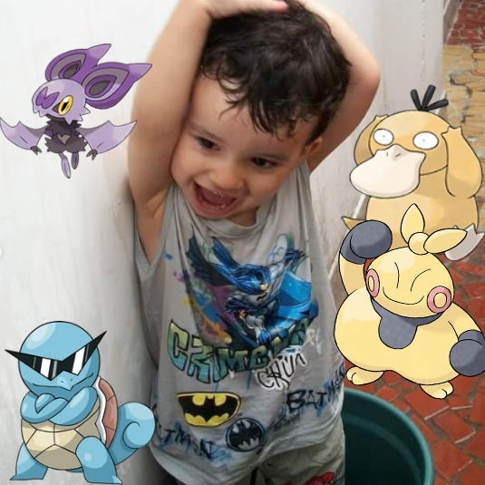

KANTO
A região de Kanto (em japonês: カントー地方, Kanto-chihō) é a primeira região do mundo Pokémon apresentada na série principal. Cenário original da Geração I, também pode ser explorada nos jogos das Gerações II, III, IV e VII.
Kanto é baseada na região real de Kantō (関東, literalmente "a leste da barreira"), no Japão. Assim como sua contraparte no mundo real, destaca-se pelo desenvolvimento urbano, tecnológico e econômico: Celadon City e Saffron City, grandes polos voltados para o comércio, foram inspiradas na metrópole de Tóquio, enquanto Vermilion City reflete a importância portuária de Yokohama.
É em Pallet Town que os novos treinadores dão seus primeiros passos ao lado do Professor Carvalho, escolhendo entre Bulbasaur, Charmander ou Squirtle (além de Pikachu ou Eevee em edições especiais) antes de cruzarem a região rumo ao desafio final no Planalto Índigo.
JOHTO
A região de Johto é a segunda região do mundo Pokémon
Johto é baseada na região real de Kansai, no Japão. Assim como Kansai e Kantō — as duas áreas mais populosas de Honshū, a maior ilha do arquipélago japonês —, Johto e Kanto representam a convivência entre culturas contrastantes. Enquanto Kantō costuma ser associada à modernidade, Kansai se conecta mais fortemente ao passado, destacando-se por seus templos, santuários, palácios, jardins e arquitetura histórica.
Johto e Kanto compartilham a mesma Liga Pokémon e mantêm uma conexão próxima entre si. Diferentemente de muitas outras regiões, viajar entre as duas é relativamente simples, seja por terra ou pelo Trem Magnético, que liga a cidade de Goldenrod a Saffron.
A região reúne cenários naturais e construções marcantes, com forte apelo à mitologia e à tradição. Boa parte de suas cidades, torres, cavernas e pontos turísticos carrega um passado antigo, como as Ruínas de Alph, a Torre Sprout, a Torre do Sino, a Torre Queimada e o Poço Slowpoke.
HOENN
A região de Hoenn (em japonês: ホウエン地方, Hōen-chihō) é a terceira região do mundo Pokémon apresentada na série principal, servindo de cenário para os jogos Pokémon Ruby, Sapphire, Emerald, Omega Ruby e Alpha Sapphire. Segundo o diretor Junichi Masuda, o nome Hoenn significa "relações abundantes" (豊縁, hōen), refletindo um dos temas centrais da região: os laços construídos entre pessoas e Pokémon.
Geograficamente, Hoenn é baseada na ilha japonesa de Kyushu, girada 90° no sentido anti-horário. De acordo com Masuda, essa rotação foi planejada para melhorar a experiência de exploração e aproveitar o formato horizontal da tela do Game Boy Advance.
Formada por uma massa continental principal e diversas ilhas menores ao redor, Hoenn destaca-se pela variedade de biomas — que vão de florestas tropicais e vulcões ativos a desertos — e, principalmente, pela imensa proporção de oceanos. Suas extensas rotas marítimas, muitas delas profundas o suficiente para permitir mergulho, reforçam o contraste entre terra e mar que define a identidade da região.
SINNOH
A região de Sinnoh (em japonês: シンオウ地方, Shin'ō-chihō), historicamente conhecida como Hisui, é a quarta região do mundo Pokémon apresentada na série principal. Ela serve de cenário para os jogos Pokémon Diamond, Pearl, Platinum, Brilliant Diamond e Shining Pearl, além de Pokémon Legends: Arceus, que retrata o passado antigo da região quando ainda se chamava Hisui.
Geograficamente, Sinnoh é inspirada na ilha japonesa de Hokkaido (com exceção da Península de Oshima, no sudoeste) e compreende uma grande massa continental cercada por ilhas menores e pela Battle Zone ao nordeste. O continente é dividido ao meio por uma imponente cordilheira cujo ponto mais alto é o Monte Coronet — separando a região em duas grandes metades e conectando-a a mitos antigos e ao misterioso Distortion World.
Marcada por um clima mais rigoroso e variado, Sinnoh introduziu pela primeira vez na série principal as rotas nevadas. Seu relevo combina cadeias montanhosas, áreas pantanosas e úmidas, grandes lagos e extensas rotas terrestres, reforçando sua atmosfera histórica e mítica.
UNOVA
A região de Unova (em japonês: イッシュ地方, Isshu-chihō) é a quinta região do mundo Pokémon apresentada na série principal. É o cenário de Pokémon Black & White e de suas sequências, Pokémon Black 2 & White 2.
Seu nome original em japonês, Isshu (一種, literalmente "uma variedade"), foi escolhido pelo diretor Junichi Masuda para representar a ideia de que, apesar da grande diversidade de espécies e pessoas na região, todos são iguais quando vistos à distância. Diferentemente das regiões anteriores, o nome foi localizado para vários idiomas — em inglês e português, Unova remete tanto à ideia de "unidade" e variedade quanto aos próprios Estados Unidos da América.
Marcando a primeira região da série principal inspirada fora do Japão, Unova tem como base a área metropolitana e o estado de Nova York. Essa inspiração se reflete no contraste entre grandes centros urbanos e arranha-céus, complexos industriais e áreas rurais, além de diversas referências à cultura norte-americana ao longo de suas cidades e rotas.
KALOS
A região de Kalos (em japonês: カロス地方, Karosu-chihō) é a sexta região do mundo Pokémon apresentada na série principal. É o cenário dos jogos Pokémon X & Y e também de Pokémon Legends: Z-A, ambientado inteiramente na metrópole de Lumiose City.
Segundo o diretor Junichi Masuda, o nome Kalos deriva da palavra grega kállos (κάλλος), que significa "beleza". Por esse motivo, a região foi baseada na França — especialmente em sua metade norte —, refletindo uma estética marcada pela elegância, arquitetura clássica, arte e cultura ao longo de suas cidades e rotas.
Com o formato característico de uma estrela de cinco pontas, Kalos é banhada pelo oceano a oeste e noroeste e cercada por cadeias montanhosas ao leste e ao sul, sendo cortada por uma extensa rede de rios. Sua geografia divide-se em três grandes áreas — Kalos Central, Kalos Costeira e Kalos Montanhosa — que se encontram nos arredores da movimentada Lumiose City.

Pokémon sempre fez parte da minha vida. Cresci assistindo ao anime da 5ª e 6ª geração na TV e adorava acompanhar as aventuras de Ash e sua equipe — sem dúvida, um dos desenhos mais marcantes da minha infância. Foi o primeiro anime que vi na vida, e a alegria de me imaginar dentro desse universo começou ali.
Aos 6 anos, comecei a colecionar cards. Não eram os oficiais licenciados pela The Pokémon Company, mas aquelas cartinhas vendidas em bancas de jornal, menores e genéricas em relação ao TCG, que eu adorava colecionar, trocar e bater — apostar no bafo — com meus amigos na escola. Minhas primeiras cartas oficiais só chegaram no meu aniversário de 10 anos, quando ganhei vários decks da minha tia, além de uma lata oficial e um campo de batalha do meu tio.
O ápice dessa experiência veio aos 11 anos, quando fui apresentado ao universo das hack ROMs pelo meu irmão. Como parte da minha família não tinha contato com videogames, nunca tive a oportunidade de jogar nos consoles oficiais, e montar uma equipe só existia na minha imaginação. Quando meu irmão me mostrou Pokémon FireRed, fiquei encantado com a possibilidade de viver uma jornada por Kanto, montar meu próprio time e enfrentar os treinadores e líderes de ginásio que eu só via no anime.